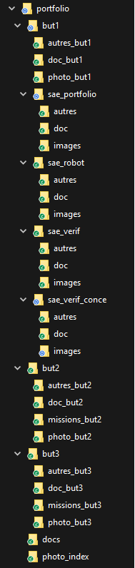
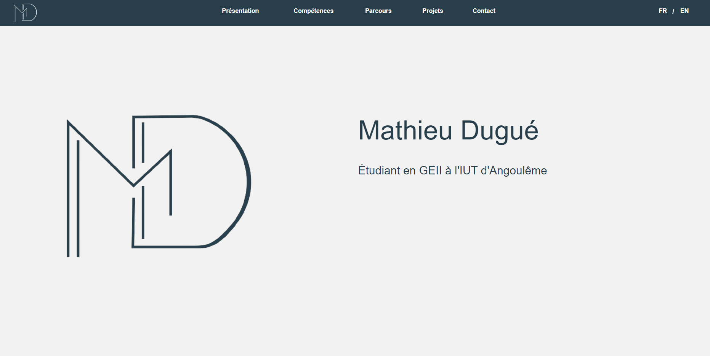
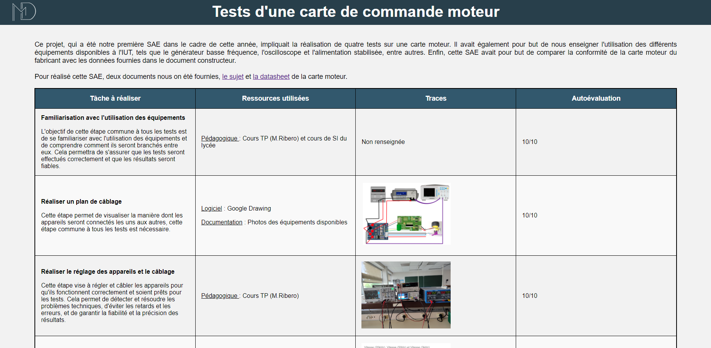
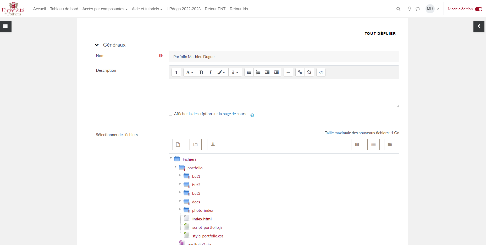

L'objectif de cette SAE est de créer un site web pour présenter notre portfolio aux entreprises ou à toute personne intéressée par nos compétences acquises lors de notre BUT. Ce projet est réalisé en autonomie, mais avec une courte introduction à html pour les débutants.
| Tâche à réaliser | Ressources utilisées | Traces | Autoévaluation |
|---|---|---|---|
| Apprendre le langage HTML et CSS Cette première tâche permet de remettre à niveau tout le monde vis à vis du langage html et CSS pour que tout le monde puisse réaliser cette SAE avec succès. |
Pédagogique : Cours d'informatique (M.Lucas), Cours de NSI au lycée |
 |
10/10
Apprendre l'html ne fut pas compliqué pour moi, car j'ai eu l'occasion de l'apprendre en 1er donc ce n'était qu'une remise à niveau. |
| Réaliser l'arborescence du site L'objectif de cette tâche est de créer l'arborescence du site web, c'est-à-dire de définir la structure et l'organisation des différentes pages et contenus qui le composent. Cela permettra de faciliter la navigation et l'accès aux informations pour les visiteurs du site. | Logiciel : Google Drawing
Pédagogique : Cours d'informatique (M.Lucas) |
 |
8/10
J'ai eu du mal à comprendre l'arborescence d'un site au début, j'ai fait des erreurs, mais j'ai réussi à comprendre et j'ai réussi à faire une bonne arborescence au final. |
| Designer le style du site L'objectif de cette tâche est de concevoir l'apparence visuelle du site web, en choisissant des couleurs, des polices et des images qui reflètent notre style personnel. |
Logiciel : Google Drawing |
 |
9/10
Le design du site fut réalisé en s'inspirant des différents portfolios existants. Elle fut adaptée pour quelle colle à ma personne et j'en suis très satisfait. |
| Réaliser la page d'accueil du site
L'objectif de cette tâche est de créer la page d'accueil du site web, qui sera la première page que les visiteurs verront. Cette page doit être attrayante et informative, donnant aux visiteurs une idée claire de qui nous sommes et de ce que nous avons accompli. |
Logiciel : Visual Studio Code
Pédagogique : Cours d'informatique (M.Lucas) |
9/10
J'ai souhaité faire une page d'accueil sobre et claire et j'en suis très satisfait. |
|
| Déterminer le contenu des différentes pages
L'objectif de cette tâche est de décider du contenu à inclure dans les différentes pages du site web. Cela implique de choisir les informations à présenter, les images et les graphiques à utiliser, ainsi que la manière dont le tout sera organisé sur chaque page. |
Logiciel : Visual Studio Code
Pédagogique : Cours de Mme.Dupouy et M.Lucas |
 |
7/10
Au début de cette SAE, je n'avais pas compris ce que devais contenir les différentes pages de cette SAE, cependant après quelque recherche, j'ai pu comprendre et j'ai réalisé un travail que je juge satisfaisant. |
| Mettre le site en ligne L'objectif de cette tâche est de rendre le site web accessible en ligne, en le téléchargeant sur Updago et en le configurant pour qu'il soit fonctionnel de tous. |
Pédagogique : Cours d'informatique (M.Lucas)
Logiciel : Updago |
 |
10/10
Pour mettre le site en ligne, je n'ai rencontré aucun problème particulier. |
| ANALYSE PERSONNELLE | |||
| Cette SAE était une nouvelle expérience pour moi. Bien que j'aie déjà eu des connaissances de base en HTML et CSS, je ne m'attendais pas à la complexité de la création d'un site web. Cependant, j'ai relevé le défi en créant un site qui me ressemble le plus possible, ce qui m'a posé des problèmes lors de la création de certaines fonctionnalités complexes. Malgré les difficultés rencontrées, je tire un bilan positif de cette SAE. C'est un projet que je pourrai utiliser à l'avenir, ce qui ne pourra que m'être bénéfique. J'ai pu apprendre de nouvelles compétences et renforcer mes connaissances existantes, tout en travaillant sur un projet qui me tient à cœur. | |||